library(tidyverse)
cantones <- read_csv("https://raw.githubusercontent.com/pf0953-programacionr/2026-ii/main/datos/cantones.csv") |>
mutate(
densidad = poblacion / area_km2,
tipo = if_else(densidad > 100, "urbano", "rural")
)ggplot2: gramática de gráficos
Trabajo previo
Lecturas
Antes de la clase, revise las siguientes lecturas. La primera es el artículo que define la gramática de gráficos en capas (lectura obligatoria de esta semana según el programa del curso); bastan las secciones 1 a 3. Las dos siguientes son capítulos de R for data science: el primero es la introducción a ggplot2 (si dispone de poco tiempo, concéntrese en este) y el segundo profundiza en las capas; el programa asigna además los capítulos 10 y 11 del mismo libro, sobre análisis exploratorio y comunicación. La cuarta es el capítulo 2 del recetario de gráficos de Chang, con recetas breves para los tipos de gráficos más comunes. La última es la hoja de referencia de ggplot2, que conviene tener a mano mientras se practica.
Wickham, H. (2010). A layered grammar of graphics. Journal of Computational and Graphical Statistics, 19(1), 3-28. https://doi.org/10.1198/jcgs.2009.07098
Wickham, H., Çetinkaya-Rundel, M., y Grolemund, G. (2023). Data visualization. En R for data science: Import, tidy, transform, visualize, and model data (2.ª ed.). O’Reilly Media. https://r4ds.hadley.nz/data-visualize.html
Wickham, H., Çetinkaya-Rundel, M., y Grolemund, G. (2023). Layers. En R for data science: Import, tidy, transform, visualize, and model data (2.ª ed.). O’Reilly Media. https://r4ds.hadley.nz/layers.html
Chang, W. (2018). Quickly exploring data. En R graphics cookbook: Practical recipes for visualizing data (2.ª ed.). O’Reilly Media. https://r-graphics.org/
Posit. (2024). Data visualization with ggplot2: Cheatsheet. https://rstudio.github.io/cheatsheets/data-visualization.pdf
Otros recursos
No hay que instalar nada: ggplot2 forma parte del núcleo del tidyverse y se carga con library(tidyverse). Tenga a mano el proyecto pf0953 y, si ya cuenta con ellos, los datos de su tema.
Introducción
ggplot2 es el paquete del tidyverse para la visualización de datos. Lo creó Hadley Wickham en 2005 como una implementación de la gramática de gráficos propuesta por Wilkinson (2005) y adaptada por Wickham (2010): un esquema que descompone cualquier gráfico estadístico en unos pocos componentes —datos, propiedades visuales, formas geométricas, escalas— que se combinan según reglas fijas. Así como dplyr no ofrece una función para cada análisis, sino verbos que se combinan, ggplot2 no ofrece una función para cada tipo de gráfico («gráfico de barras», «gráfico de pastel»), sino piezas con las que se construye cualquiera de ellos.
El enfoque es declarativo: el código describe qué se quiere mostrar —cuál variable va en cada eje, cuál determina el color, con cuál forma geométrica se dibuja cada observación— y ggplot2 se encarga de cómo dibujarlo: calcula los ejes, elige los colores, construye la leyenda. Por eso funciona tan bien con los datos tidy del capítulo 10: si cada variable es una columna, asignar una variable a una propiedad del gráfico es simplemente nombrar la columna.
Los ejemplos continúan con los datos de los cantones (INEC, 2023), con las columnas densidad y tipo que se calcularon en el capítulo anterior.
La gramática de gráficos
Según la gramática de gráficos, todo gráfico tiene al menos tres componentes:
- Datos: un data frame tidy, con una fila por observación y una columna por variable.
- Mapeos estéticos (aesthetic mappings): la correspondencia entre las variables de los datos y las propiedades visuales del gráfico, llamadas estéticas: la posición en el eje x, la posición en el eje y, el color, el tamaño, la forma.
- Geometrías: la forma con la que se dibuja cada observación (puntos, líneas, barras). Cada geometría agrega al gráfico una capa.
A estos se suman otros componentes para los que ggplot2 elige valores predeterminados razonables y que se modifican solo cuando hace falta. La tabla 1 los reúne, con las funciones que les corresponden.
| Componente | Qué define | Funciones |
|---|---|---|
| Datos | El data frame con las observaciones y las variables. |
ggplot(datos)
|
| Mapeos estéticos | Cuál variable corresponde a cada propiedad visual. |
aes(x = , y = , color = )
|
| Geometrías | La forma con la que se dibujan las observaciones; cada una es una capa. |
geom_point(), geom_col(), geom_line()…
|
| Escalas | Cómo se traducen los valores a posiciones, colores o tamaños; controlan los ejes y las leyendas. |
scale_x_log10(), scale_color_manual()…
|
| Facetas | La división del gráfico en paneles, uno por cada valor de una variable. |
facet_wrap()
|
| Etiquetas | El título, los nombres de los ejes y de las leyendas, la fuente. |
labs()
|
| Tema | La apariencia de lo que no son datos: fondo, cuadrícula, tipografía. |
theme_minimal(), theme()…
|
En el código, los tres componentes básicos se escriben siempre con la misma plantilla:
ggplot(<DATOS>, aes(<MAPEOS>)) +
<GEOMETRIA>()Un gráfico paso a paso
¿Tienen más habitantes los cantones más extensos? La pregunta relaciona dos variables numéricas, y el gráfico indicado es uno de dispersión, con un punto por cantón. La función ggplot() recibe los datos y, dentro de aes(), los mapeos: el área en el eje x y la población en el eje y. Como en dplyr, las columnas se escriben sin comillas. Con solo eso, ggplot2 dibuja el lienzo y los ejes, con sus rangos calculados a partir de los datos, pero ninguna observación: todavía no se le ha dicho con qué forma dibujarlas.
ggplot(cantones, aes(x = area_km2, y = poblacion))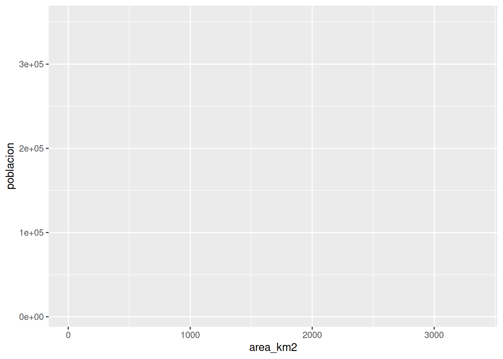
La geometría geom_point() agrega una capa de puntos. Los componentes de un gráfico se unen con el operador +, que por convención se escribe al final de la línea, como el pipe.
ggplot(cantones, aes(x = area_km2, y = poblacion)) +
geom_point()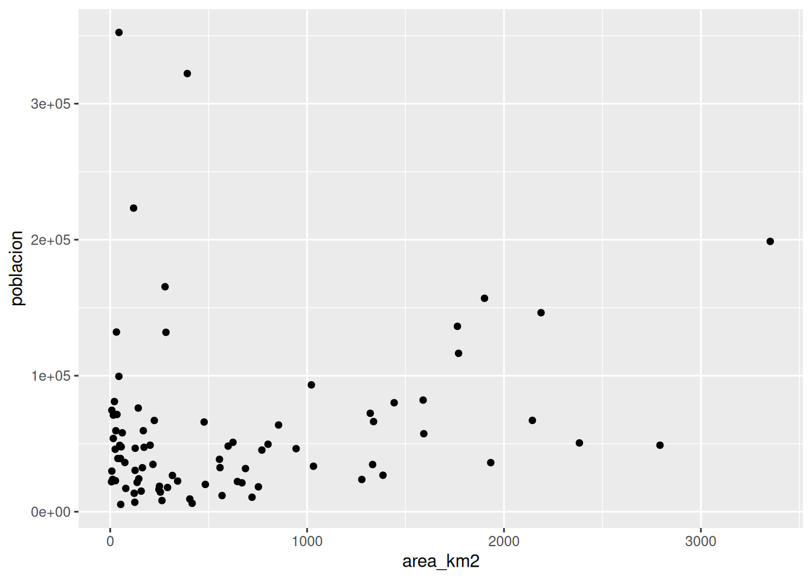
El gráfico responde la pregunta: no necesariamente. Los dos cantones más poblados, arriba a la izquierda, tienen áreas pequeñas en comparación con las de los más extensos, y varios de estos, a la derecha, tienen menos de 100 000 habitantes. También revela algo sobre los datos: la mayoría de los cantones se amontona en la esquina inferior izquierda, porque unos pocos valores muy grandes estiran los ejes; más adelante se corrige con una escala.
Observe la diferencia entre los dos operadores: el pipe |> encadena funciones que transforman datos, y el + une componentes de un gráfico. Confundirlos es el error más frecuente al empezar con ggplot2, y por eso tiene un lugar en la clínica de errores.
Ejercicios de esta sección: ejercicios sobre la gramática y las estéticas.
Estéticas
Un gráfico de dispersión muestra dos variables con la posición de los puntos; otras variables se muestran con otras estéticas. Si el color se mapea a la columna tipo, ggplot2 asigna un color a cada categoría y construye la leyenda:
ggplot(cantones, aes(x = area_km2, y = poblacion, color = tipo)) +
geom_point()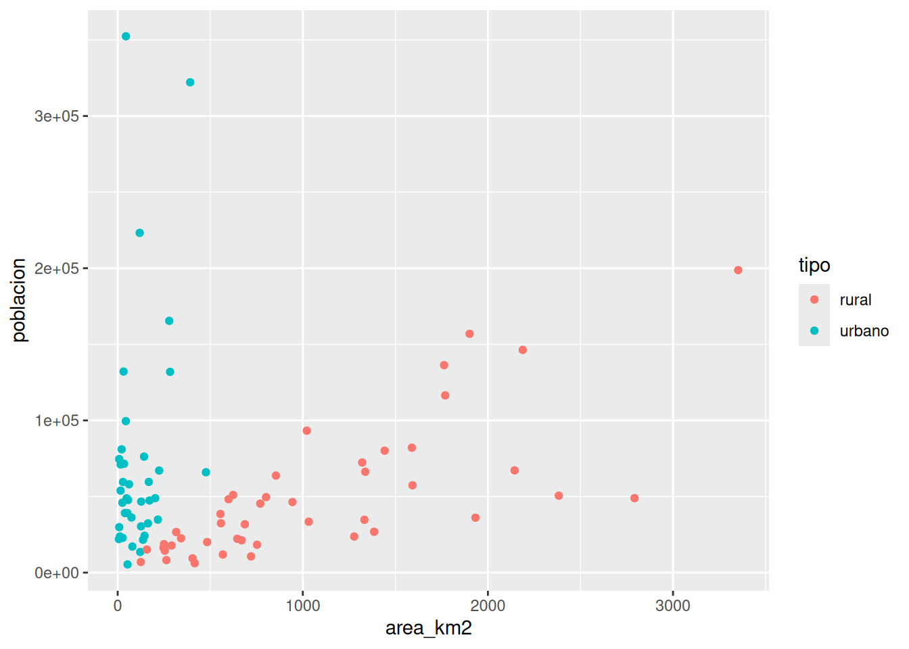
La tabla 2 presenta las estéticas más usadas. No todas las geometrías aceptan todas las estéticas: la página de documentación de cada geometría las enumera en la sección Aesthetics.
| Estética | Propiedad visual | Observaciones |
|---|---|---|
x, y
|
Posición en los ejes. | Las más efectivas para comparar valores. |
color
|
Color de puntos, líneas y bordes. | Con una variable categórica produce colores distintos; con una numérica, un degradado. |
fill
|
Color de relleno de barras, cajas y áreas. |
En una barra, color es el borde y fill, el relleno.
|
size
|
Tamaño de los puntos. | Para variables numéricas. |
shape
|
Forma de los puntos. | Para variables categóricas con pocas categorías. |
alpha
|
Transparencia, de 0 (invisible) a 1 (opaco). | Útil cuando los puntos se traslapan. |
linewidth
|
Grosor de las líneas. | |
label
|
Texto. |
Para geom_text() y geom_label().
|
group
|
Agrupación de las observaciones, sin cambio visual. | Indica, por ejemplo, cuáles puntos une cada línea. |
Mapear y fijar
Hay dos maneras de dar valor a una estética, y la diferencia está en si se escribe dentro o fuera de aes():
- Mapear: dentro de
aes(), la estética recibe una columna de los datos y cambia de una observación a otra (aes(color = tipo)). Genera una leyenda. - Fijar: fuera de
aes(), como argumento de la geometría, la estética recibe un valor constante, igual para todas las observaciones (geom_point(color = "steelblue")). No genera leyenda.
ggplot(cantones, aes(x = area_km2, y = poblacion)) +
geom_point(color = "steelblue", size = 3, alpha = 0.5)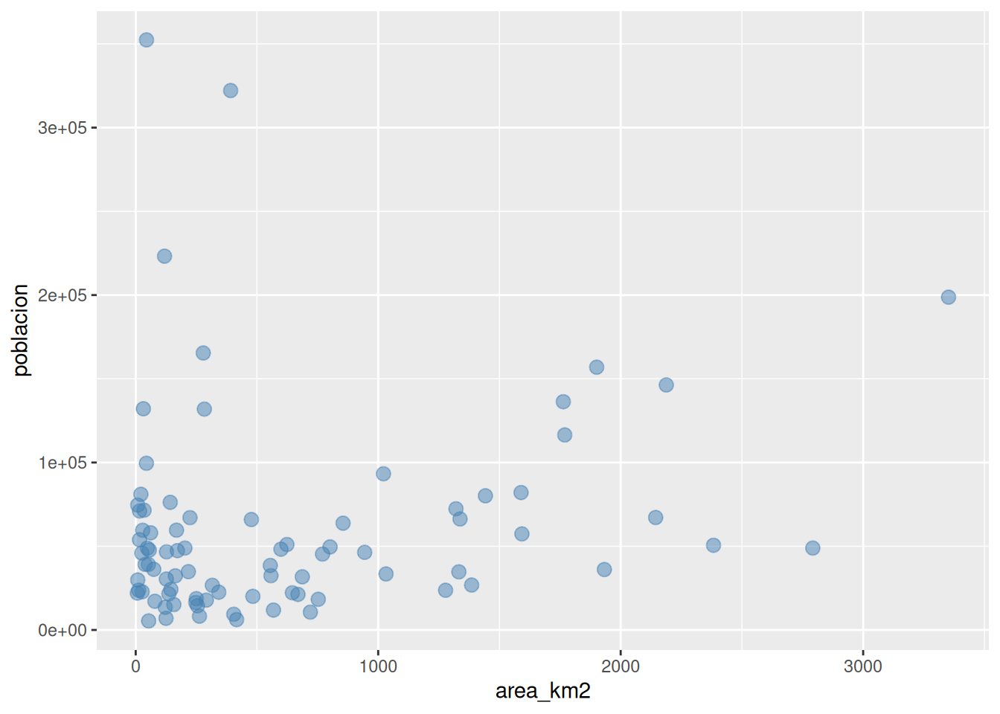
Los colores se indican por su nombre en inglés (la función colors() muestra los 657 disponibles) o por su código hexadecimal ("#005da4"). La transparencia deja ver dónde se traslapan los puntos: las zonas más oscuras tienen más cantones.
Ejercicios de esta sección: ejercicios sobre la gramática y las estéticas.
Geometrías
Cambiar el tipo de gráfico es cambiar la geometría. La tabla 3 presenta las de uso más frecuente; la referencia de ggplot2 las documenta todas.
| Geometría | Gráfico | Variables | Pregunta que responde |
|---|---|---|---|
geom_point()
|
Dispersión | Dos numéricas | ¿Cómo se relacionan dos variables? |
geom_histogram()
|
Histograma | Una numérica | ¿Cómo se distribuyen los valores de una variable? |
geom_bar()
|
Barras (conteo) | Una categórica | ¿Cuántas observaciones hay en cada categoría? |
geom_col()
|
Barras (valores) | Una categórica y una numérica | ¿Cuánto vale una cantidad en cada categoría? |
geom_boxplot()
|
Diagrama de caja | Una categórica y una numérica | ¿Cómo cambia la distribución de una variable entre categorías? |
geom_line()
|
Líneas | Dos numéricas (una suele ser el tiempo) | ¿Cómo cambia una variable a lo largo del tiempo? |
geom_smooth()
|
Curva de tendencia | Dos numéricas | ¿Cuál es la tendencia general de la relación? |
geom_text()
|
Etiquetas de texto | Dos de posición y una de texto | ¿Cuál observación es cada punto? |
Histogramas
Un histograma muestra la distribución de una variable numérica: divide su rango en intervalos (clases) de igual ancho y dibuja una barra por intervalo, con altura igual a la cantidad de observaciones que contiene. geom_histogram() solo necesita la estética x; el eje y lo calcula la geometría. El ancho de los intervalos se indica con binwidth (en las unidades de la variable) o su cantidad con bins; boundary = 0 hace que los intervalos empiecen en cero.
ggplot(cantones, aes(x = poblacion)) +
geom_histogram(binwidth = 25000, boundary = 0)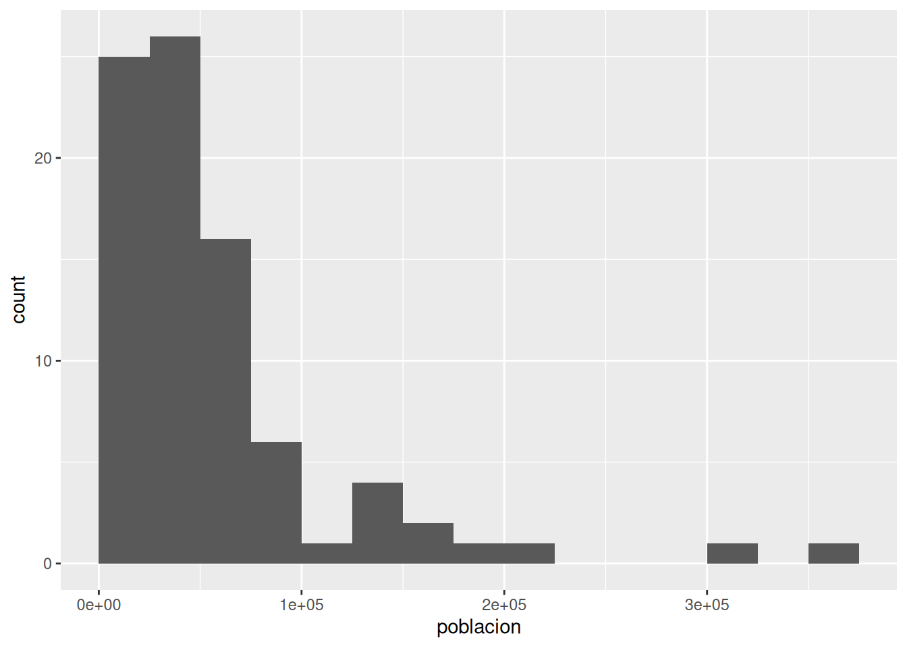
La distribución es muy asimétrica: la mayoría de los cantones tiene menos de 75 000 habitantes y unos pocos, muchos más. El ancho de los intervalos cambia el aspecto del histograma, por lo que conviene probar varios valores; si no se indica ninguno, ggplot2 usa 30 intervalos y lo advierte con un mensaje.
Gráficos de barras
Hay dos geometrías de barras, y elegir entre ellas depende de si la altura de las barras ya está en los datos.
geom_bar() cuenta: recibe una variable categórica en x y dibuja una barra por categoría, con altura igual a su cantidad de filas. Es el count() de dplyr hecho gráfico.
ggplot(cantones, aes(x = provincia)) +
geom_bar()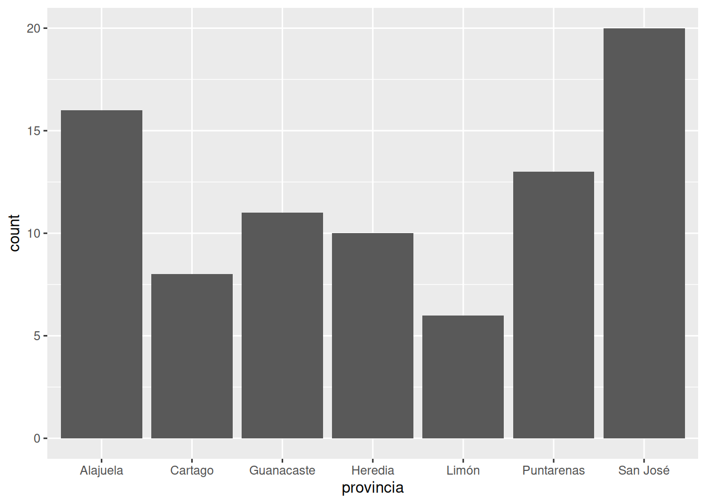
Las barras aparecen en orden alfabético, que rara vez es el más informativo. El paquete forcats, también del núcleo del tidyverse, tiene funciones para reordenar las categorías: fct_infreq() las ordena de la más a la menos frecuente. Si además se mapea la estética fill a otra variable categórica, cada barra se divide según sus valores:
ggplot(cantones, aes(x = fct_infreq(provincia), fill = tipo)) +
geom_bar()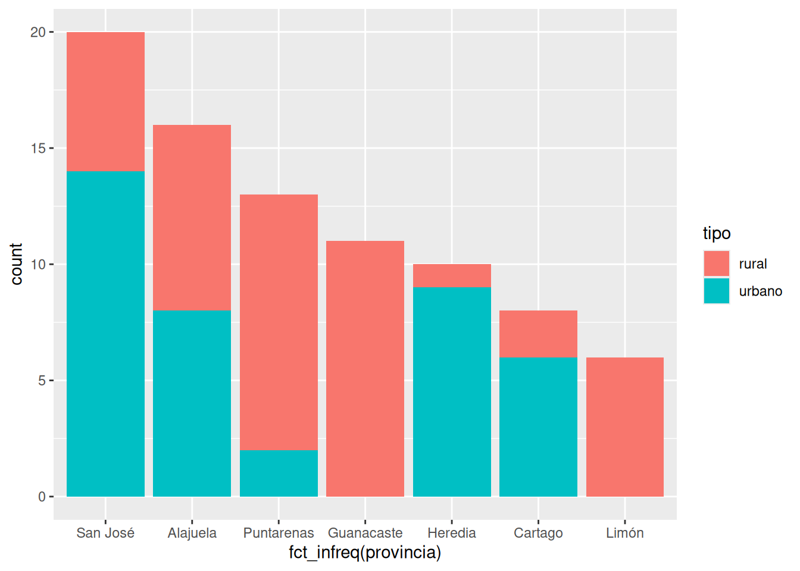
Las barras quedan apiladas; con geom_bar(position = "dodge") se dibujan agrupadas, una junto a la otra, y con position = "fill" todas tienen la misma altura y muestran proporciones.
geom_col() no cuenta: dibuja barras cuya longitud es el valor de una columna, por lo que necesita las estéticas x e y. Es la geometría para graficar el resultado de un summarize(). En el siguiente ejemplo, la variable categórica se mapea al eje y, con lo que las barras quedan horizontales y los nombres de las categorías se leen sin dificultad, y fct_reorder() ordena las provincias según su población:
cantones |>
group_by(provincia) |>
summarize(poblacion = sum(poblacion)) |>
ggplot(aes(x = poblacion, y = fct_reorder(provincia, poblacion))) +
geom_col()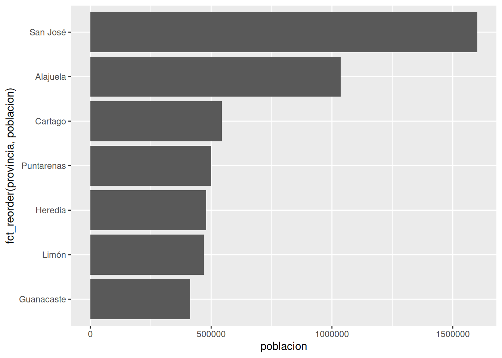
El ejemplo muestra cómo se conectan dplyr y ggplot2: el pipeline prepara los datos y los pasa a ggplot() como primer argumento, por lo que este ya no los menciona. A partir de ggplot(), el operador es +.
Diagramas de caja
Un diagrama de caja (boxplot) resume la distribución de una variable numérica con cinco valores: la caja va del primer al tercer cuartil y contiene la mitad central de las observaciones, la línea de su interior es la mediana, y los «bigotes» se extienden hasta el valor más lejano que no se considere atípico; los valores atípicos se dibujan como puntos. Su utilidad principal es comparar distribuciones entre categorías, con geom_boxplot():
ggplot(cantones, aes(x = provincia, y = poblacion)) +
geom_boxplot()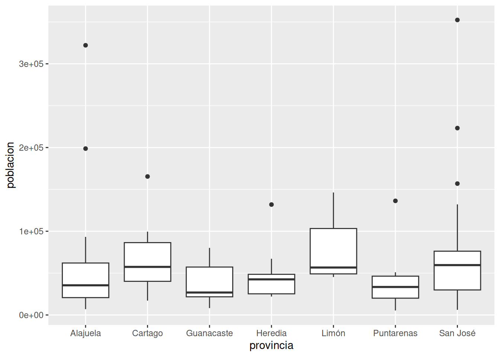
Los puntos son los cantones atípicos: en cinco de las siete provincias hay al menos uno con una población muy superior a la del resto.
Gráficos de líneas
Un gráfico de líneas muestra cómo cambia una variable numérica en función de otra que tiene un orden, casi siempre el tiempo. Los datos de los cantones no tienen una dimensión temporal, pero sí la tabla de población de las provincias en 2011 y 2022 (INEC, 2012, 2023) del capítulo 10, una vez convertida al formato largo:
poblacion_larga <- tribble(
~provincia, ~`2011`, ~`2022`,
"San José", 1404242, 1601167,
"Alajuela", 848146, 1035464,
"Cartago", 490903, 545092,
"Heredia", 433677, 479117,
"Guanacaste", 326953, 412808,
"Puntarenas", 410929, 500166,
"Limón", 386862, 470383
) |>
pivot_longer(cols = c(`2011`, `2022`), names_to = "anio", values_to = "poblacion")geom_line() une con una línea las observaciones de cada grupo. La estética group indica cuáles observaciones forman cada línea —aquí, las de una misma provincia—; sin ella, ggplot2 no sabe cuáles puntos unir y lo advierte (Each group consists of only one observation). Este gráfico tiene además dos capas: las líneas y, sobre ellas, los puntos.
ggplot(poblacion_larga, aes(x = anio, y = poblacion, color = provincia, group = provincia)) +
geom_line() +
geom_point()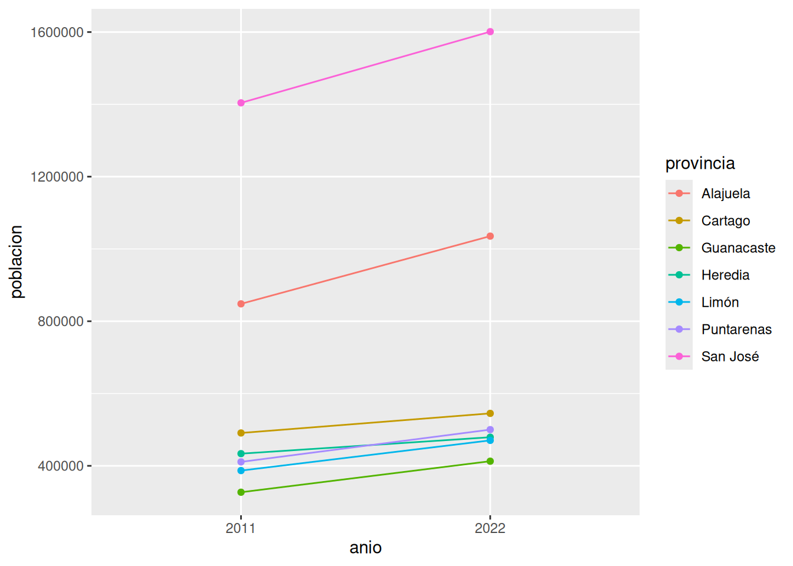
Este es el gráfico que no se podía hacer con la tabla ancha: necesita el año en una columna, para mapearlo al eje x, y la población en otra.
Ejercicios de esta sección: ejercicios sobre geometrías.
Capas, escalas y facetas
Capas
Un gráfico puede tener tantas capas como haga falta; se dibujan en el orden en que se escriben. Los mapeos de ggplot() valen para todas las capas, y los que se escriben en el aes() de una geometría, solo para esa capa. Una capa puede incluso tener sus propios datos, con el argumento data. En el siguiente gráfico, la capa de puntos usa todos los cantones y la de texto, solo los de más de 200 000 habitantes, que se rotulan con su nombre (vjust desplaza el texto verticalmente para que no tape el punto):
ggplot(cantones, aes(x = area_km2, y = poblacion)) +
geom_point(aes(color = tipo)) +
geom_text(
data = filter(cantones, poblacion > 200000),
aes(label = canton),
vjust = -0.8,
size = 3
)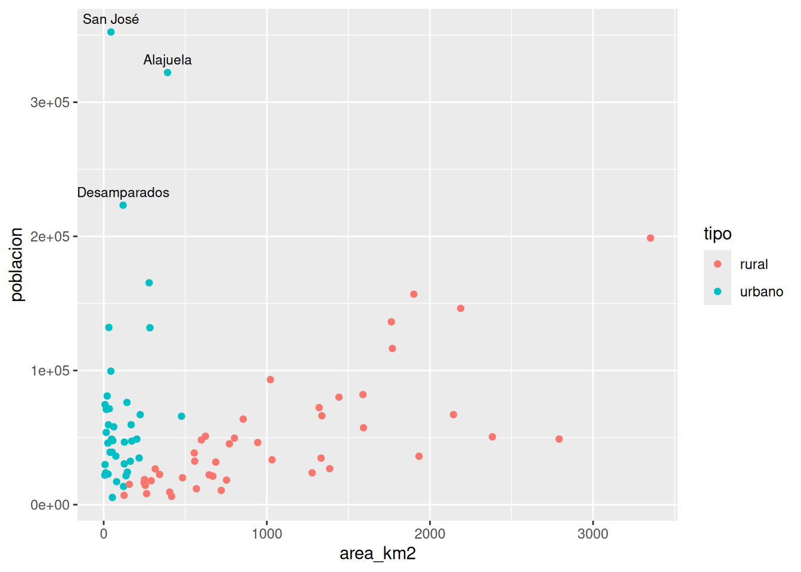
Escalas
Cada estética tiene una escala, que traduce los valores de los datos a posiciones, colores o tamaños, y de la que dependen los ejes y las leyendas. ggplot2 elige una escala predeterminada para cada estética; para cambiarla se agrega al gráfico una función scale_<estética>_<tipo>().
El amontonamiento de puntos de los gráficos anteriores se debe a que las dos variables tienen muchos valores pequeños y pocos muy grandes. Una escala logarítmica, en la que cada paso multiplica por diez en lugar de sumar una cantidad fija, los separa: scale_x_log10() y scale_y_log10(). Para los colores, scale_color_manual() asigna un color elegido a cada categoría (scale_fill_manual() hace lo mismo con los rellenos).
ggplot(cantones, aes(x = area_km2, y = poblacion, color = tipo)) +
geom_point() +
scale_x_log10() +
scale_y_log10(labels = scales::label_number(big.mark = " ")) +
scale_color_manual(values = c(rural = "#4f7d3a", urbano = "#005da4"))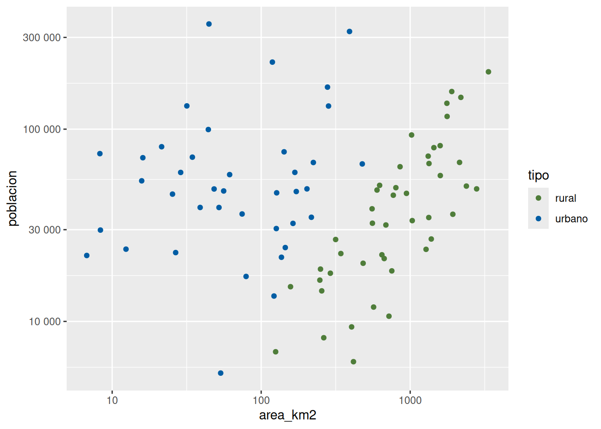
Con las escalas logarítmicas, los cantones se reparten por todo el gráfico y aparece un patrón que antes no se veía: los urbanos y los rurales quedan separados por una diagonal, que corresponde a la densidad de 100 habitantes por kilómetro cuadrado con la que se definió la columna tipo.
El argumento labels controla cómo se escriben los valores del eje. La función label_number() del paquete scales los escribe completos, con un espacio como separador de miles, en lugar de en notación científica (1e+05). El paquete scales se instala junto con ggplot2, pero library(tidyverse) no lo carga; la notación paquete::funcion() permite usar una función de un paquete instalado sin cargarlo.
Para elegir colores, además de los manuales, están las paletas de ColorBrewer (scale_color_brewer(palette = "Dark2")), diseñadas para mapas y gráficos, y las de viridis (scale_color_viridis_d() para categorías y scale_color_viridis_c() para valores numéricos), que se distinguen también con daltonismo y en impresiones en blanco y negro.
Facetas
Cuando un gráfico tiene demasiadas categorías para distinguirlas por color, se divide en facetas: paneles con los mismos ejes, uno por cada valor de una variable. facet_wrap() recibe la variable precedida por una virgulilla (~):
ggplot(cantones, aes(x = area_km2, y = poblacion, color = tipo)) +
geom_point() +
scale_x_log10() +
scale_y_log10(labels = scales::label_number(big.mark = " ")) +
facet_wrap(~ provincia)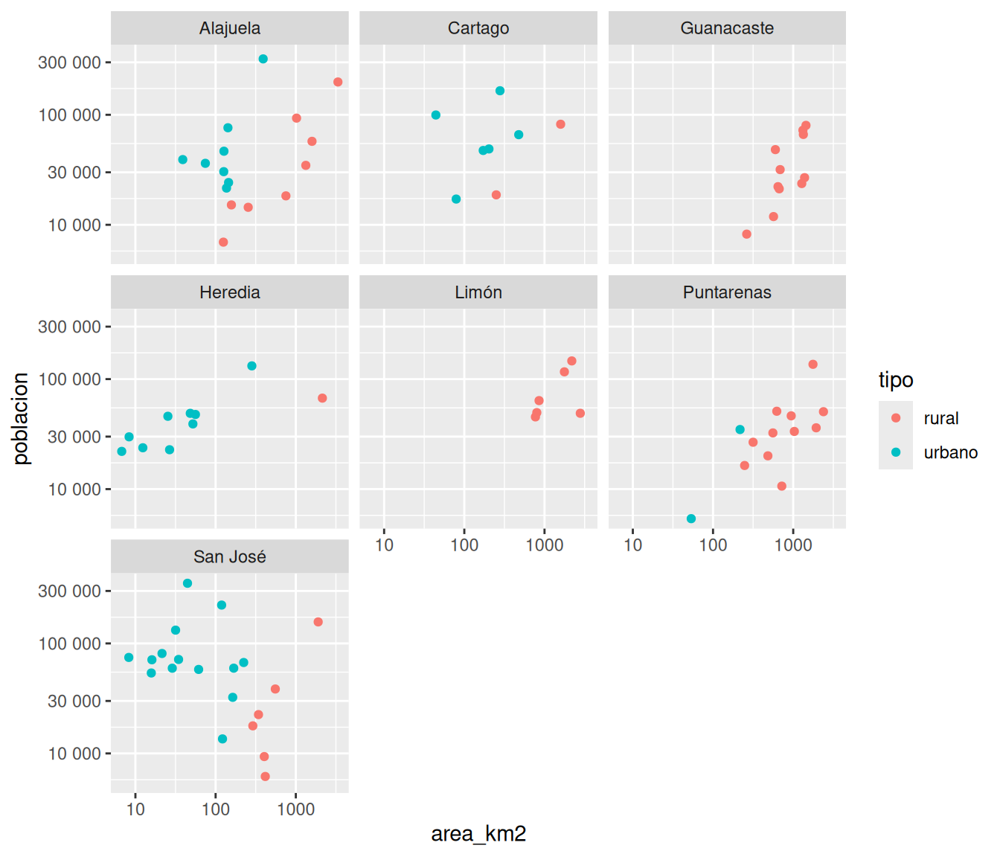
Como todos los paneles comparten los ejes, se comparan a simple vista: Guanacaste y Limón no tienen cantones urbanos, y los de Heredia son casi todos pequeños y densos.
Ejercicios de esta sección: ejercicios sobre capas, escalas y facetas.
Etiquetas y temas
Los gráficos anteriores sirven para explorar los datos, pero no para presentarlos: los ejes llevan los nombres de las columnas y nada dice qué muestran ni de dónde vienen los datos. Un gráfico para comunicar necesita, como mínimo, un título, ejes con nombres legibles y unidades, y la fuente.
labs() define las etiquetas: title, subtitle, caption (la nota al pie, donde se cita la fuente) y una por cada estética mapeada (x, y, color, fill), que rotula su eje o su leyenda. Las funciones theme_*() cambian el tema, es decir, la apariencia de todo lo que no son datos: theme_gray() es el predeterminado, con fondo gris; theme_minimal(), theme_bw() y theme_classic() tienen fondo blanco y son más apropiados para documentos. theme() ajusta elementos individuales, como la posición de la leyenda.
Un gráfico es un objeto como cualquier otro: se puede asignar a una variable y seguirle agregando componentes; para mostrarlo se escribe su nombre.
grafico <- ggplot(cantones, aes(x = area_km2, y = poblacion, color = tipo)) +
geom_point(size = 2, alpha = 0.8) +
scale_x_log10(labels = scales::label_number(big.mark = " ")) +
scale_y_log10(labels = scales::label_number(big.mark = " ")) +
scale_color_manual(values = c(rural = "#4f7d3a", urbano = "#005da4")) +
labs(
title = "Área y población de los cantones de Costa Rica",
subtitle = "Estimación de población de 2022; ejes en escala logarítmica",
x = "Área (km²)",
y = "Población (habitantes)",
color = "Tipo de cantón",
caption = "Fuente: INEC (2023)"
) +
theme_minimal() +
theme(legend.position = "bottom")
grafico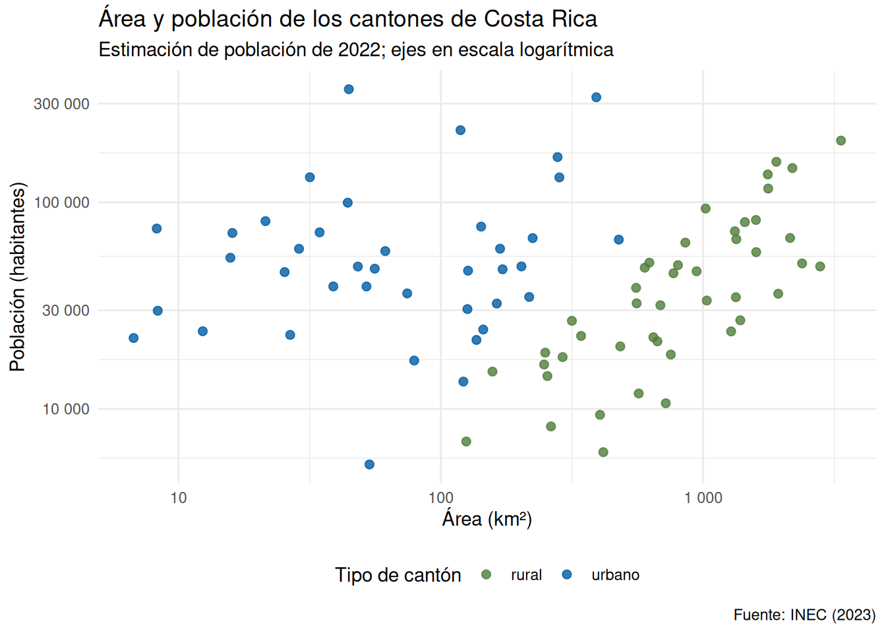
Gráficos en documentos Quarto
En un documento Quarto, el gráfico aparece debajo del bloque que lo genera. Las opciones de bloque controlan su presentación:
fig-cap: la leyenda de la figura, con su fuente.fig-alt: el texto alternativo, que describe el gráfico a quien no puede verlo.fig-widthyfig-height: el ancho y el alto, en pulgadas (por defecto, 7 y 5).echo: false: oculta el código y deja solo el gráfico, como en un informe.
```{r}
#| label: fig-area-poblacion
#| fig-cap: "Área y población de los cantones de Costa Rica. Fuente: INEC (2023)."
#| fig-alt: "Gráfico de dispersión del área y la población de los 84 cantones."
#| fig-width: 8
#| fig-height: 5
grafico
```Si la etiqueta del bloque empieza con fig-, Quarto numera la figura («Figura 1») y permite citarla en el texto con @fig-area-poblacion. Como las leyendas ya identifican la figura, en un documento conviene omitir el title de labs() o la leyenda de fig-cap, para no repetir.
Para usar un gráfico fuera del documento —en una presentación o un artículo—, ggsave() lo guarda en un archivo cuyo formato depende de la extensión (PNG, PDF, SVG), con el tamaño y la resolución indicados. Como toda ruta del curso, es relativa al directorio del proyecto.
ggsave("area-poblacion.png", grafico, width = 16, height = 10, units = "cm", dpi = 300)Ejercicios de esta sección: ejercicios sobre presentación.
Clínica de errores
La tabla 4 recoge los errores más frecuentes al empezar con ggplot2. Varios no producen un mensaje, sino un gráfico distinto del esperado.
| Mensaje o síntoma | Causa | Solución |
|---|---|---|
`mapping` must be created by `aes()`. […] Did you use `%>%` or `|>` instead of `+`?
|
Un pipe entre los componentes del gráfico. |
Después de ggplot(), los componentes se unen con +.
|
Cannot use `+` with a single argument. Did you accidentally put `+` on a new line?, o aparece el gráfico sin la última capa
|
El + está al inicio de una línea.
|
Escribirlo al final de la línea anterior. |
| Aparecen el lienzo y los ejes, pero ningún dato |
Falta la geometría, o falta el + antes de ella.
|
Agregar + geom_…().
|
object 'Poblacion' not found
|
El nombre de la columna está mal escrito, o la columna no existe en el data frame que recibe ggplot().
|
Revisar los nombres con glimpse().
|
| Todos los puntos son rojos y la leyenda dice «blue» |
Un color fijo escrito dentro de aes(): se toma como una variable con un solo valor.
|
Sacarlo de aes(): geom_point(color = "blue").
|
object 'tipo' not found al fijar un color
|
Una columna escrita fuera de aes().
|
Mapearla dentro de aes(): aes(color = tipo).
|
`stat_count()` must only have an x or y aesthetic
|
geom_bar() con las estéticas x e y: esa geometría cuenta filas y no admite una variable de altura.
|
Usar geom_col() si la altura está en una columna.
|
`stat_bin()` using `bins = 30`. Pick better value `binwidth`
|
No es un error: el histograma usó 30 intervalos porque no se indicó otra cosa. |
Indicar binwidth o bins.
|
Each group consists of only one observation, o una línea en zigzag
|
geom_line() no sabe cuáles observaciones unir.
|
Mapear group (o color) a la variable que identifica cada línea.
|
Discrete value supplied to a continuous scale
|
Una escala numérica (por ejemplo, scale_y_log10()) aplicada a una variable de texto.
|
Revisar cuál variable está mapeada a esa estética y su tipo con glimpse().
|
Removed 5 rows containing missing values or values outside the scale range
|
Una advertencia: hay valores faltantes (NA) en las columnas mapeadas, o valores fuera de los límites del eje; esas filas no se dibujan.
|
Comprobar que la omisión es la esperada; si lo es, filtrar antes los NA.
|
could not find function "ggplot"
|
No se ha ejecutado library(tidyverse) en la sesión, o el bloque está después del gráfico en el documento.
|
Ejecutar el bloque de paquetes; revisar el orden de los bloques. |
Resumen
- ggplot2 implementa la gramática de gráficos: un gráfico se construye con datos, mapeos estéticos de las variables a propiedades visuales (
aes()) y geometrías (geom_*()), que se unen con el operador+. - Las estéticas (
x,y,color,fill,size,shape,alpha) se mapean a una columna dentro deaes()o se fijan a un valor constante fuera de él. - La geometría determina el tipo de gráfico:
geom_point()para la relación entre dos variables,geom_histogram()ygeom_boxplot()para distribuciones,geom_bar()para conteos,geom_col()para valores ya calculados ygeom_line()para cambios en el tiempo. Cada geometría es una capa, y un gráfico puede tener varias. - Las escalas (
scale_*()) controlan cómo se traducen los valores a posiciones y colores; las facetas (facet_wrap()) dividen el gráfico en paneles;labs()define las etiquetas ytheme_*(), el tema. - dplyr prepara los datos y ggplot2 los grafica: un pipeline termina en
ggplot()y, a partir de ahí, el operador es+. Las funciones de forcats (fct_infreq(),fct_reorder()) ordenan las categorías. - En Quarto, las opciones
fig-cap,fig-alt,fig-widthyfig-heightcontrolan la presentación de las figuras;ggsave()guarda un gráfico en un archivo.
Ejercicios
Los ejercicios se agrupan según la sección del capítulo a la que corresponden y se realizan en un documento Quarto nuevo del proyecto pf0953. Como en los capítulos anteriores, use la provincia y el cantón elegidos como ejemplo propio.
La gramática y las estéticas
En el proyecto
pf0953, cree un documento Quarto con el título «Gráficos de los cantones de Costa Rica», su nombre como autor o autora y el encabezado YAML de los documentos anteriores (lang: es,toc: true,embed-resources: true), y guárdelo comograficos.qmd. Agregue un bloque etiquetadopreparacion, con la opción#| message: false, que cargue el tidyverse, leacantones.csvy calcule las columnasdensidadytipo, como el del inicio de este capítulo. Luego, en una sección «Dispersión», elabore un gráfico de dispersión del área (eje x) y la densidad (eje y) de los cantones, con el color según la provincia. ¿En cuál esquina del gráfico están los cantones más densos?Prediga antes de ejecutar qué muestra cada gráfico; luego ejecute:
ggplot(cantones, aes(x = area_km2, y = poblacion, color = "blue")) + geom_point() ggplot(cantones, aes(x = area_km2, y = poblacion)) + geom_point(color = "blue") ggplot(cantones, aes(x = area_km2, y = poblacion, color = densidad)) + geom_point()Después de ejecutar, haga clic aquí para ver la explicación
En el primero, los puntos son rojos y hay una leyenda con el texto «blue»: dentro de
aes(),"blue"no es un color, sino una variable con un único valor, a la que ggplot2 asigna el primer color de su paleta. En el segundo, los puntos son azules y no hay leyenda: el color está fijado. En el tercero, el color está mapeado a una variable numérica, por lo que la leyenda es un degradado continuo, en el que casi todos los cantones quedan en el extremo oscuro y solo los más densos destacan.En una sección «Mi provincia», escriba un pipeline que filtre los cantones de su provincia y los pase a
ggplot()para elaborar un gráfico de dispersión del área y la población, con el tamaño de los puntos según la densidad y una transparencia fija de 0,6.
Geometrías
Elabore un histograma de la densidad de los cantones y pruebe tres valores de
bins(por ejemplo, 10, 30 y 60). Describa en una oración la forma de la distribución y cuál valor la muestra mejor.Elabore un gráfico de barras horizontales con la población de cada cantón de su provincia, ordenadas de mayor a menor. Antes de escribir el código, decida cuál geometría corresponde: ¿
geom_bar()ogeom_col()?Con
geom_bar()y la estéticafill, elabore un gráfico de la cantidad de cantones urbanos y rurales de cada provincia en sus tres variantes: apiladas, agrupadas (position = "dodge") y de proporciones (position = "fill"). ¿Cuál variante responde mejor la pregunta «¿cuál provincia tiene la mayor proporción de cantones urbanos?»?Prediga antes de ejecutar qué muestra cada línea; luego ejecute:
ggplot(cantones, aes(x = provincia, y = poblacion)) + geom_bar() ggplot(cantones, aes(x = provincia, y = poblacion)) + geom_col()Después de ejecutar, haga clic aquí para ver la explicación
La primera falla con
`stat_count()` must only have an x or y aesthetic:geom_bar()cuenta filas y no admite una variable para la altura. La segunda funciona, pero conviene saber qué muestra:geom_col()dibuja una barra por fila, es decir, por cantón, y las apila en cada provincia, de modo que la altura total de cada barra es la suma de la población de sus cantones. El resultado coincide con el delsummarize()del capítulo, pero es preferible calcular la suma explícitamente: el código dice lo que hace y las barras se pueden ordenar por su total.
Capas, escalas y facetas
Elabore un diagrama de caja de la densidad de los cantones por provincia, con el eje de la densidad en escala logarítmica y las provincias ordenadas según su mediana con
fct_reorder(provincia, densidad). ¿Cuál provincia tiene la mayor mediana de densidad? ¿Coincide con la provincia más densa delresumen_provinciasdel capítulo anterior? Explique la diferencia.Al gráfico de dispersión de su provincia (ejercicio 3) agréguele una capa de texto con el nombre de cada cantón. Luego elabore un histograma de la población de todos los cantones dividido en dos facetas según la columna
tipo.
Presentación
Elija uno de los gráficos de los ejercicios anteriores y déjelo listo para presentar: título, nombres de los ejes con sus unidades, nombre de la leyenda, fuente de los datos en
captiony un tema de fondo blanco. En el bloque, agregue las opcionesfig-alt,fig-widthyfig-height. Procese el documento con Render y publíquelo en el repositoriopractica-quarto, junto con los de los capítulos anteriores.Si ya tiene los datos de su tema, escriba una pregunta que se responda con un gráfico, identifique en la tabla 3 la geometría que le corresponde y elabórelo, con la preparación de los datos que haga falta en un pipeline de dplyr. Es el punto de partida de los gráficos de la tarea 2.
Referencias bibliográficas
Chang, W. (2018). R graphics cookbook: Practical recipes for visualizing data (2.ª ed.). O’Reilly Media. https://r-graphics.org/
Instituto Nacional de Estadística y Censos. (2012). X Censo Nacional de Población y VI de Vivienda 2011: Resultados generales. https://sistemas.inec.cr/pad5/index.php/catalog/113
Instituto Nacional de Estadística y Censos. (2023). Resultados de la Estimación de Población y Vivienda 2022 [archivo XLSX]. https://admin.inec.cr/sites/default/files/2023-11/reResultadosEstimacionPoblacionVivienda2022_3.xlsx
Posit. (2024). Data visualization with ggplot2: Cheatsheet. https://rstudio.github.io/cheatsheets/data-visualization.pdf
Wickham, H. (2010). A layered grammar of graphics. Journal of Computational and Graphical Statistics, 19(1), 3-28. https://doi.org/10.1198/jcgs.2009.07098
Wickham, H., Çetinkaya-Rundel, M., y Grolemund, G. (2023). R for data science: Import, tidy, transform, visualize, and model data (2.ª ed.). O’Reilly Media. https://r4ds.hadley.nz/
Wickham, H., Chang, W., Henry, L., Pedersen, T. L., Takahashi, K., Wilke, C., Woo, K., Yutani, H., Dunnington, D., y van den Brand, T. (2026). ggplot2: Create elegant data visualisations using the grammar of graphics (versión 4.0.3) [paquete de R]. https://ggplot2.tidyverse.org/
Wilkinson, L. (2005). The grammar of graphics (2.ª ed.). Springer. https://doi.org/10.1007/0-387-28695-0